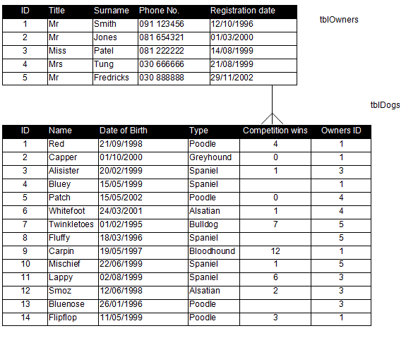

<div id="jsn-maincontent" class="span9 order1  row-fluid">
					<div id="jsn-maincontent_inner">
						<div id="jsn-centercol"><div id="jsn-centercol_inner">
									<div id="jsn-mainbody-content" class=" jsn-hasmainbody">
								<div id="jsn-mainbody-content-inner1"><div id="jsn-mainbody-content-inner2"><div id="jsn-mainbody-content-inner3"><div id="jsn-mainbody-content-inner4" class="row-fluid">
								
										
								
								<div id="jsn-mainbody-content-inner" class="span12 order1 ">
		
										<div id="jsn-mainbody">
										<div id="system-message-container">
	</div>

										<div class="item-page" itemscope itemtype="https://schema.org/Article">
	<meta itemprop="inLanguage" content="en-GB" >
	
		
						
		
	
	
		
								<div itemprop="articleBody">
		<p></p>
<h1 style="text-align: center;">Structured Query Language (SQL) - getting started</h1>
<p style="text-align: left;"><strong><span class="NormalContentHeading">Introduction</span></strong><br> SQL, or Structured Query Language, is a language that is used for gaining access to and manipulating tables of data. It is a ‘standard’ language in that it has been defined by the American National Standards Institute (<strong>ANSI</strong>) and so will work with many different applications such as Access, Informix and Oracle, for example. Although there are a number of different SQL versions in existence, they all support the basic ANSI standard and so all can carry out certain functions in the same way, such as SELECT and DELETE. We will see examples of these later.&nbsp;</p>
 
<p><strong><span class="NormalContentHeading">How to get experience of SQL<br></span></strong><span class="NormalContentHeading">There are some online simulators, where you can enter commands in SQL and then see the results. You could try the one here:&nbsp;</span><span class="NormalContentHeading"><a href="http://www.w3schools.com/sql/">http://www.w3schools.com/sql/</a>&nbsp;There are some very good notes on this website as well as others (use Google), and of course some excellent tutorials on YouTube. </span></p>
<p><span class="NormalContentHeading">A better way to explore would be to open up Access and use that. You need to open up the Queries section and switch into SQL. You should write and save one SQL job, and then run it. for example, write an SQL query to create a table, save it and then run it. When you run any other queries after creating a table, make sure any tables you are using are closed first, or you may get errors. Using SQL in Access does depend very much on what version of Access you are using, but your teacher will help you get started. Once you have written the first view SQL commands and run them, you will be able to experiment with lots of different instructions. The hardest part is just getting going!</span></p>
<p><strong><span class="NormalContentHeading">A dog club’s database</span></strong><br> Here is a design for a dog club.&nbsp;</p>
<p align="center"></p>
<p>We must describe any <strong>one</strong> E-R relationship with <strong>two</strong> sentences. In this case, we have:</p>
<ul>
<li style="list-style-type: none;">
<ul style="list-style-type: disc;">
<li>Each owner can own many dogs.</li>
<li>Each dog can be owned by only one owner.</li>
</ul>
</li>
</ul>
<p>Here are the two tables with some record in:</p>
<p align="center"></p>
<p><strong><span class="NormalContentHeading">Using Access to do the examples</span></strong><br> You must get some actual experience using SQL to really understand it. Use Access or any other relational database package. To try out the following examples in Access 2000, do the following.</p>
<ul>
<li style="list-style-type: none;">
<ul style="list-style-type: disc;">
<li>In the database window (The database window is the screen you get when you first open your database, where you can see a window with a list on the left that says tables, queries, forms reports, pages etc.) click on <strong>Queries</strong>, <strong>New</strong>, <strong>OK</strong> and then don’t <strong>ADD</strong> any tables. Just <strong>CLOSE</strong> the pop-up box.</li>
<li>Now click the <strong>design view icon</strong>. It is probably situated under the <strong>FILE</strong> menu.</li>
<li>An SQL box should pop-up and you are ready to type in your queries. If you get stuck getting started, you will need to ask your peers or your teacher for help or refer to the HELP menu in Access or use the Internet.</li>
</ul>
</li>
</ul>
<p><strong>IMPORTANT</strong>: When you do each query, you must be sure that you get the correct results. Just because you get some results does not mean they are correct. Whilst you are learning how to construct queries, you should always:</p>
<ul style="list-style-type: disc;">
<li style="list-style-type: none;">
<ul style="list-style-type: disc;">
<li><strong>Predict</strong> the results of running a query before you actually run it.</li>
<li><strong>Run</strong> the query.</li>
<li><strong>Compare</strong> your prediction to the actual results obtained.</li>
</ul>
</li>
</ul>
<p align="center"></p>
<p><strong><span class="NormalContentHeading">Creating a database<br></span></strong><span class="NormalContentHeading">You must create a database in SQL before you can start adding tables and then data to it. The syntax for creating a database is:</span></p>
<p style="margin-left: 30px;"><strong><span class="NormalContentHeading">CREATE DATABASE database_name</span></strong></p>
<p><span class="NormalContentHeading">To create a database for the Dog Club, we would use:</span></p>
<p style="margin-left: 30px;"><strong><span class="NormalContentHeading"><strong style="line-height: 16.3636360168457px;"><span class="NormalContentHeading">CREATE DATABASE dog_club</span></strong></span></strong></p>
<p><strong><span class="NormalContentHeading">Creating a table<br></span></strong><span class="NormalContentHeading">Once the database has been created, you can add tables to it. You can create a table in SQL using the CREATE TABLE command. The syntax for this command is as follows:</span></p>
<p style="margin-left: 30px;"><strong><span class="NormalContentHeading">CREATE TABLE tableName<br>(<br>column1_name data_type(size),<br><span style="line-height: 16.3636360168457px;">column2_name data_type(size),</span><br><span style="line-height: 16.3636360168457px;">column3_name data_type(size)</span><br>);</span></strong></p>
<p><span class="NormalContentHeading">To create the Dogs table, for example, we would type in the following:</span></p>
<p style="margin-left: 30px;"><strong><span class="NormalContentHeading"><strong style="line-height: 16.3636360168457px;"><span class="NormalContentHeading">CREATE TABLE tblOwners<br>(<br>ID int(1),<br><span style="line-height: 16.3636360168457px;">Title varchar(5),</span><br><span style="line-height: 16.3636360168457px;">Surname&nbsp;<strong style="line-height: 16.3636360168457px;"><span class="NormalContentHeading"><strong style="line-height: 16.3636360168457px;"><span class="NormalContentHeading"><span style="line-height: 16.3636360168457px;">varchar(20),</span></span></strong></span></strong><br><strong style="line-height: 16.3636360168457px;"><span class="NormalContentHeading"><strong style="line-height: 16.3636360168457px;"><span class="NormalContentHeading"><span style="line-height: 16.3636360168457px;">Phone_no&nbsp;<strong style="line-height: 16.3636360168457px;"><span class="NormalContentHeading"><strong style="line-height: 16.3636360168457px;"><span class="NormalContentHeading"><span style="line-height: 16.3636360168457px;">varchar(20),</span></span></strong></span></strong></span><br><span style="line-height: 16.3636360168457px;">Registration&nbsp;<strong style="line-height: 16.3636360168457px;"><span class="NormalContentHeading"><strong style="line-height: 16.3636360168457px;"><span class="NormalContentHeading"><span style="line-height: 16.3636360168457px;">date</span></span></strong></span></strong></span></span></strong></span></strong></span></span></strong></span></strong><br>);</p>
<p><span class="NormalContentHeading">ID will hold an integer, Title, Surname and Phone_no will hold text and Registration will hold a date.&nbsp;</span><span class="NormalContentHeading">We now have an empty table for the owners of dogs that looks like this:</span></p>
<table style="width: 50%;" border="1">
<tbody>
<tr style="background-color: #f8f53a;">
<td style="width: 20%; text-align: center;"><strong>ID</strong></td>
<td style="width: 20%; text-align: center;"><strong>Title</strong></td>
<td style="width: 20%; text-align: center;"><strong>Surname</strong></td>
<td style="width: 20%; text-align: center;"><strong>Phone_no</strong></td>
<td style="width: 20%; text-align: center;"><strong>Registration</strong></td>
</tr>
<tr>
<td>&nbsp;</td>
<td>&nbsp;</td>
<td>&nbsp;</td>
<td>&nbsp;</td>
<td>&nbsp;</td>
</tr>
</tbody>
</table>
<p><span class="NormalContentHeading">Every table must have a primary key. This is the one field that is unique for each row in the table, for each record. It is typically an ID number or similar.&nbsp;</span><span class="NormalContentHeading">We can add the primary key when we create a table, like this:</span></p>
<p style="margin-left: 30px;"><strong><span class="NormalContentHeading"><strong style="line-height: 16.3636360168457px;"><span class="NormalContentHeading"><strong style="line-height: 16.3636360168457px;"><span class="NormalContentHeading">CREATE TABLE tblOwners<br>(<br>ID int(1),<br><span style="line-height: 16.3636360168457px;">Title varchar(5),</span><br><span style="line-height: 16.3636360168457px;">Surname&nbsp;<strong style="line-height: 16.3636360168457px;"><span class="NormalContentHeading"><strong style="line-height: 16.3636360168457px;"><span class="NormalContentHeading"><span style="line-height: 16.3636360168457px;">varchar(20),</span></span></strong></span></strong><br><strong style="line-height: 16.3636360168457px;"><span class="NormalContentHeading"><strong style="line-height: 16.3636360168457px;"><span class="NormalContentHeading"><span style="line-height: 16.3636360168457px;">Phone_no&nbsp;<strong style="line-height: 16.3636360168457px;"><span class="NormalContentHeading"><strong style="line-height: 16.3636360168457px;"><span class="NormalContentHeading"><span style="line-height: 16.3636360168457px;">varchar(20),</span></span></strong></span></strong></span><br><span style="line-height: 16.3636360168457px;">Registration&nbsp;<strong style="line-height: 16.3636360168457px;"><span class="NormalContentHeading"><strong style="line-height: 16.3636360168457px;"><span class="NormalContentHeading"><span style="line-height: 16.3636360168457px;">date,<br></span></span></strong></span></strong></span></span></strong></span></strong></span></span></strong></span></strong></span></strong>PRIMARY KEY (ID)<br style="line-height: 16.3636360168457px;" ><strong><span style="line-height: 16.3636360168457px;">);</span></strong></p>
<p><span class="NormalContentHeading">We can also add a primary key after a table has been created, by designing an SQL query and running it with these commands:</span></p>
<p style="margin-left: 30px;"><strong><span class="NormalContentHeading">ALTER TABLE tblOwners<br>ADD PRIMARY KEY (ID)</span></strong></p>
<p><span class="NormalContentHeading">To add the other table in our database, we would use:</span></p>
<p style="margin-left: 30px;"><strong><span class="NormalContentHeading"><strong style="line-height: 16.3636360168457px;"><span class="NormalContentHeading"><strong style="line-height: 16.3636360168457px;"><span class="NormalContentHeading"><strong style="line-height: 16.3636360168457px;"><span class="NormalContentHeading">CREATE TABLE tblOwners<br>(<br>ID int(1),<br><span style="line-height: 16.3636360168457px;">Name varchar(20),</span><br><span style="line-height: 16.3636360168457px;">DofB&nbsp;<strong style="line-height: 16.3636360168457px;"><span class="NormalContentHeading"><strong style="line-height: 16.3636360168457px;"><span class="NormalContentHeading"><span style="line-height: 16.3636360168457px;">date,</span></span></strong></span></strong><br><strong style="line-height: 16.3636360168457px;"><span class="NormalContentHeading"><strong style="line-height: 16.3636360168457px;"><span class="NormalContentHeading"><span style="line-height: 16.3636360168457px;">Type&nbsp;<strong style="line-height: 16.3636360168457px;"><span class="NormalContentHeading"><strong style="line-height: 16.3636360168457px;"><span class="NormalContentHeading"><span style="line-height: 16.3636360168457px;">varchar(20),<br>Wins<strong style="line-height: 16.3636360168457px;"><span class="NormalContentHeading"><strong style="line-height: 16.3636360168457px;"><span class="NormalContentHeading"><strong style="line-height: 16.3636360168457px;"><span class="NormalContentHeading"><strong style="line-height: 16.3636360168457px;"><span class="NormalContentHeading"><span style="line-height: 16.3636360168457px;"><strong style="line-height: 16.3636360168457px;"><span class="NormalContentHeading"><strong style="line-height: 16.3636360168457px;"><span class="NormalContentHeading"><span style="line-height: 16.3636360168457px;">&nbsp;<strong style="line-height: 16.3636360168457px;"><span class="NormalContentHeading"><strong style="line-height: 16.3636360168457px;"><span class="NormalContentHeading"><span style="line-height: 16.3636360168457px;">varchar(20),</span></span></strong></span></strong></span></span></strong></span></strong></span></span></strong></span></strong></span></strong></span></strong></span></span></strong></span></strong></span></span></strong></span></strong></span></span></strong></span></strong></span></strong></span></strong><br><strong>Owner_ID int,<br></strong><strong><span class="NormalContentHeading">PRIMARY KEY (ID)<br></span></strong><strong><span class="NormalContentHeading"><strong style="line-height: 16.3636360168457px;"><span style="line-height: 16.3636360168457px;">);</span></strong></span></strong></p>
<p><strong><span class="NormalContentHeading">ALTER TABLE<br></span></strong><span class="NormalContentHeading">The ALTER TABLE command is useful for modifying the table. For example, if you wanted to delete the Surname field in the Owners' table, you would use:</span></p>
<p style="margin-left: 30px;"><strong><span class="NormalContentHeading"><strong style="line-height: 16.3636360168457px;"><span class="NormalContentHeading">ALTER TABLE tblOwners<br>DROP COLUMN Surname</span></strong></span></strong></p>
<p><span class="NormalContentHeading"><span class="NormalContentHeading"></span></span><span class="NormalContentHeading"><span class="NormalContentHeading"><span style="line-height: 16.3636360168457px;">If you wanted to add a new column called Surname in the Owners' table (that didn't exist before, perhaps because you just deleted it), you would use:</span></span></span></p>
<p style="margin-left: 30px;"><strong><span class="NormalContentHeading"><strong style="line-height: 16.3636360168457px;"><span class="NormalContentHeading"><strong style="line-height: 16.3636360168457px;"><span class="NormalContentHeading">ALTER TABLE tblOwners<br>ADD Surname varchar(20)</span></strong></span></strong></span></strong></p>
<p></p>	</div>

	
							</div>

									</div>
				
							</div>
							
				        							
							
							</div></div></div></div></div>			
							
							
		        				</div></div> 
				</div></div>